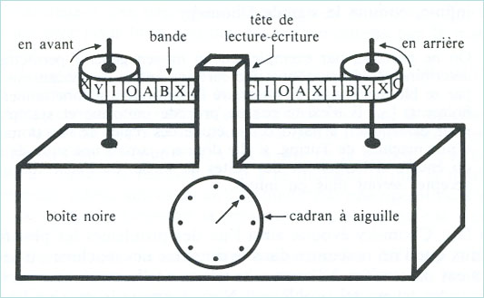

IFT-2002
Informatique Théorique
H14 - cours 10
Julien Marcil - julien.marcil@ift.ulaval.ca
Cours précédents
Turing-acceptable
Définition: Un langage $L$ est dit Turing-acceptable (ou récursivement énumérable)s’il existe une machine de Turing qui accepte les mots de $L$.
Étant donnée une entrée $w$
- Si $w \in L$ alors $M$ s’arrête et accepte $w$
- Si $w \notin L$ alors $M$ s’arrête et rejette $w$ ou ne s’arrête pas
Turing-décidable
Définition: Un langage $L$ est dit Turing-décidable (ou décidable)s’il existe une machine de Turing $M$ qui accepte les mots de $L$ et rejette les autres mots.
Étant donnée une entrée $w$
- Si $w \in L$ alors $M$ s’arrête et accepte $w$
- Si $w \notin L$ alors $M$ s’arrête et rejette $w$
Théorème
Soit un le langage $L$. Si $L$ est Turing-décidable, alors $\overline{L}$ est Turing-décidable.
Théorème
Soit un le langage $L$. Si $L$ et $\overline{L}$ sont Turing-acceptable, alors $L$ est Turing-décidable.
Aujourd'hui
- Décidabilité
- Réduction
Décidabilité
Notation
Soit un programme $M$, alors on note $\langle M \rangle$ la chaîne de symboles qui représente $M$.
Différence entre $M$ et $\langle M \rangle$
Lorsque l’on parle d’un « programme » on ne fait souvent pas la distinction entre le code source du programme et l’exécutable qui lui correspond.
La différence entre $M$ et $\langle M \rangle$ est de la même nature.
- $M$ est une « machine » donc un processus automatique, un exécutable, quelque chose qui reçoit une entrée et retourne (peut-être) une sortie.
- $\langle M \rangle$ est une suite de 0 et de 1. On choisit d’interpréter cette suite de 0 et de 1 comme ayant un sens précis, celui de l’encodage de $M$.

La Trahison des images (1929, huile sur toile, 59 × 65 cm), René Magritte
$A_{\text{AFD}}$
$$A_{\text{AFD}} = \{\langle B, w\rangle \mid B \text{ est un AFD qui accepte } w\}$$
$\text{AFD}$: automate fini déterminite
Théorème
$A_{\text{AFD}}$ est un langage décidable.
Démonstration
Soit la machine de Turing $M_{A_{\text{AFD}}}$ qui décide $A_{\text{AFD}}$.
$M_{A_{\text{AFD}}} = $ Avec $\langle B, w\rangle$
- Simuler $B$ sur $w$.
- Si la simulation termine sur un état accepteur alors $\mathtt{ACCEPTE}$. Si la simulation termine sur un état non-accepteur alors $\mathtt{REJETTE}$.
$A_{\text{AFN}}$
$$A_{\text{AFN}} = \{\langle B, w\rangle \mid B \text{ est un AFN qui accepte } w\}s$$
$\text{AFN}$: automate fini non déterminite
Théorème
$A_{\text{AFN}}$ est un langage décidable.
Démonstration
Soit la machine de Turing $M_{A_{\text{AFN}}}$ qui décide $A_{\text{AFN}}$.
$M_{A_{\text{AFN}}} = $ Avec $\langle B, w\rangle$
- Covertir $B$ en $C$ un $\text{AFD}$ équivalent.
- Executer $M_{A_{\text{AFD}}}$ sur $\langle C, w\rangle$
- Si $M_{A_{\text{AFD}}}$ accepte alors $\mathtt{ACCEPTE}$ sinon $\mathtt{REJETTE}$.
$E_{\text{AFD}}$
$$E_{\text{AFD}} = \{\langle B \rangle \mid B \text{ est un AFD et } L(B) = \emptyset\}$$
Théorème
$E_{\text{AFD}}$ est un langage décidable.
Démonstration
Soit la machine de Turing $M_{E_{\text{AFD}}}$ qui décide $E_{\text{AFD}}$.
$M_{E_{\text{AFD}}} = $ Avec $\langle B \rangle$
- Marquer l'état initial de $B$.
-
Répéter jusqu'à ce qu'il n'y est plus d'état à marquer
- Marquer un état pour lequel il existe une transition venant d'un état déjà marqué.
- Si aucun état accepteur de $B$ n'est marqué alors $\mathtt{ACCEPTE}$ sinon $\mathtt{REJETTE}$.
$EQ_{\text{AFD}}$
$$EQ_{\text{AFD}} = \{\langle A, B \rangle \mid A \text{ et } B \text{ sont des AFD et } L(A) = L(B) \}$$
Théorème
$EQ_{\text{AFD}}$ est un langage décidable.
Théorie des ensembles
Soit $C$ un $\text{AFD}$ tel que $$L(C) = \big( L(A) \cap \overline{L(B)} \big) \cup \big( \overline{L(A)} \cap L(B) \big)$$
$$L(A) = L(B) \ \Leftrightarrow \ L(C) = \emptyset$$
Démonstration
Soit la machine de Turing $M_{EQ_{\text{AFD}}}$ qui décide $EQ_{\text{AFD}}$.
$M_{EQ_{\text{AFD}}} = $ Avec $\langle A, B \rangle$
- Construire l'automate fini déterministe $C$ à partir de $A$ et $B$.
- Executer $M_{E_{\text{AFD}}}$ sur $\langle C \rangle$
- Si $M_{E_{\text{AFD}}}$ accepte alors $\mathtt{ACCEPTE}$ sinon $\mathtt{REJETTE}$.
$A_{\text{GHC}}$
$$A_{\text{GHC}} = \{\langle G, w\rangle \mid G \text{ est une GHC qui génère } w\}$$
$\text{GHC}$: grammaire hors context
Théorème
$A_{\text{GHC}}$ est un langage décidable.
Forme normale de Chomsky
Définition: Soit $G = (V, \Sigma, S, R)$ une grammaire. $G$ est dans la forme normale de Chomsky si les règles de réécriture sont de la forme:
- $A \to BC$ pour $A, B, C \in V$ et $B \ne S$ et $C \ne S$
- $A \to a$ pour $A \in V$, $a \in \Sigma$.
- $S \to \lambda$ pour le symbole de départ $S$.
Démonstration
Soit la machine de Turing $M_{A_{\text{GHC}}}$ qui décide $A_{\text{GHC}}$.
$M_{A_{\text{GHC}}} = $ Avec $\langle G, w\rangle$
- Convertir $G$ à une grammaire équivalente dans la forme normale de Chomsky
- Lister toutes les dérivations de $2n-1$ productions (ou de seulement une production si $w = \lambda$)
- Si un des mots générés est $w$ alors $\mathtt{ACCEPTE}$ sinon $\mathtt{REJETTE}$.
$E_{\text{GHC}}$
$$E_{\text{GHC}} = \{\langle G \rangle \mid G \text{ est une GHC et } L(G) = \emptyset\}$$
Théorème
$E_{\text{GHC}}$ est un langage décidable.
Démonstration
Soit la machine de Turing $M_{E_{\text{GHC}}}$ qui décide $E_{\text{GHC}}$.
$M_{E_{\text{GHC}}} = $ Avec $\langle G \rangle$
- Marquer tous les symboles terminaux de $G$.
-
Répéter jusqu'à ce qu'il n'y est plus de variables à marquer
- Marquer une variable $A$ tel que $G$ a une règle $A \to U_1 \cdots U_k$ et que les symboles $U_1, \dots, U_k$ sont tous marqués.
- Si la variable initiale est marquée alors $\mathtt{ACCEPTE}$ sinon $\mathtt{REJETTE}$.
$EQ_{\text{GHC}}$
$$EQ_{\text{GHC}} = \{\langle G, H \rangle \mid G \text{ et } H \text{ sont des GHC et } L(G) = L(H) \}$$
Problème
Les langages hors contexte ne sont pas fermés sur les opérations complément et intersection.
Théorème
Soit le langage $L$.
$$L \text{ est hors contexte} \Rightarrow L \text{ est décidable}$$
Démonstration
$L$ est hors contexte si il exite une grammaire $G$ qui génère $L$.
Soit la machine de Turing $M_{G}$ qui décide $L(G)$.
$M_{G} = $ Avec $\langle w \rangle$
- Exécuter $M_{A_{\text{GHC}}}$ sur $\langle G, w \rangle$
- Si $M_{A_{\text{GHC}}}$ accepte alors $\mathtt{ACCEPTE}$ sinon $\mathtt{REJETTE}$.
Indécidabilité
$A_{\text{MT}}$
$$A_{\text{MT}} = \{\langle M, w\rangle \mid M \text{ est une machine de Turing qui accepte } w\}$$
$\text{MT}$: machine de Turing
Théorème
$A_{\text{TM}}$ est un langage Turing-acceptable.
Théorème
$A_{\text{TM}}$ n'est pas un langage décidable.
Corrolaire
$\overline{A_{\text{TM}}}$ n'est pas un langage Turing-acceptable.
$HALT_{\text{MT}}$
$$HALT_{\text{MT}} = \{\langle M, w \rangle \mid M \text{ est une MT et } M \text{ s'arrête sur } w \}$$
Théorème
$HALT_{\text{MT}}$ n'est pas un langage décidable.
Réduction
Réduction
Une réduction est un algorithme transformant un problème en un autre.
Si un problème $A$ peut être réduit à (i.e. transformé en) un problème $B$, et que le problème $A$ est difficile alors le problème $B$ est au moins aussi difficile. On écrit alors $A \le_m B$.
Réduction
Un language $L$ se réduit au language $K$, noté $L \le_m K$ si il existe $f: \Sigma^* \to \Sigma^*$ une fonction calculable tel que
$$\forall_{w \in \Sigma^*} \quad w \in L \ \Leftrightarrow \ f(w) \in K$$
Théorème
Si $A \le_m B$ et $B$ est décidable, alors $A$ est décidable.
Corrolaire
Si $A \le_m B$ et $A$ n'est pas décidable, alors $B$ n'est pas décidable.
Théorème
$A_{\text{MT}} \le_m HALT_{\text{MT}}$
Ceci implique que $HALT_{\text{MT}}$ n'est pas un langage décidable.
$E_{\text{MT}}$
$$E_{\text{MT}} = \{\langle M \rangle \mid M \text{ est une MT et } L(M) = \emptyset \}$$
Théorème
$A_{\text{MT}} \le_m E_{\text{MT}}$
Ceci implique que $E_{\text{MT}}$ n'est pas un langage décidable.
$REGULIER_{\text{MT}}$
$$REGULIER_{\text{MT}} = \{\langle M \rangle \mid M \text{ est une MT et } L(M) \text{ est régulier} \}$$
Théorème
$A_{\text{MT}} \le_m REGULIER_{\text{MT}}$
Ceci implique que $REGULIER_{\text{MT}}$ n'est pas un langage décidable.
$EQ_{\text{MT}}$
$$EQ_{\text{MT}} = \{\langle M_1, M_2 \rangle \mid M_1 \text{ et } M_2 \text{ sont des MT et } L(M_1) = L(M_2) \}$$
Théorème
$E_{\text{MT}} \le_m EQ_{\text{MT}}$
Ceci implique que $EQ_{\text{MT}}$ n'est pas un langage décidable.
Théorème
Si $A \le_m B$ et $B$ est Turing-acceptable, alors $A$ est Turing-acceptable.
Corrolaire
Si $A \le_m B$ et $A$ n'est pas Turing-acceptable, alors $B$ n'est pas Turing-acceptable.
Corrolaire
Si $A \le_m B$ et $\overline{A}$ n'est pas Turing-acceptable, alors $\overline{B}$ n'est pas Turing-acceptable.
co-Turing-acceptable
Définition: Un langage $L$ est dit co-Turing-acceptable si $\overline{L}$ est Turing-acceptable.
Example
$A_{\text{MT}}$ est Turing-acceptable.
$A_{\text{MT}}$ n'est pas co-Turing-acceptable.
Corrolaire
Si $A \le_m B$ et $A$ n'est pas co-Turing-acceptable, alors $B$ n'est pas co-Turing-acceptable.
Théorème
$E_{\text{MT}}$ n'est ni Turing-acceptable ni co-Turing-acceptable
Démonstration
$$A_{\text{MT}} \le_m EQ_{\text{MT}} \ \Rightarrow \ EQ_{\text{MT}} \text{ n'est pas co-Turing-acceptable}$$
$$A_{\text{MT}} \le_m \overline{EQ_{\text{MT}}} \ \Rightarrow \ EQ_{\text{MT}} \text{ n'est pas Turing-acceptable}$$
...
Exercice
Exemple
Exemple
Décidabilité
Machine de Turing

Différences avec les
automates finis
- La tête peut se déplacer dans les deux sens.
- C’est une tête de lecture/écriture.
- Le ruban est infini.
- Il y a deux états finaux, qui sont des états d’arrêt (aussitôt que la machine en atteint un, elle s’arrête).
À chaque étape
- lit le symbole sur le ruban
- fait une transition d’état
- écri un symbole sur le ruban
- déplace la tête vers la droite ou vers la gauche
Machine de Turing
Définition: Une machine de Turing consiste en un 7-tuple de la forme $(S, \Sigma, \Gamma, \delta, \iota, s_{\text{accepte}}, s_{\text{rejete}})$ où
- $S$ est un ensemble fini d’états.
- $\Sigma$ est l’alphabet d'entré.
- $\Gamma$ est l’alphabet du ruban tel que $␣ \in \Gamma$ et $\Sigma \subseteq \Gamma$.
- $\delta : S \times \Gamma \to S \times \Gamma \times \{L,R\}$ est la fonction de transition.
- $\iota \in S$ est l’état initial.
- $s_{\text{accepte}} \in S$ est l’état final acceptant.
- $s_{\text{rejete}} \in S$ est l’état final rejetant et $s_{\text{accepte}} \neq s_{\text{rejete}}$
Remarque
- ␣ représente une case inoccupée du ruban: initialement, toutes les cases autres que celles qui contiennent la séquence d’entrée contiennent un ␣.
Example
Donner une machine de Turing $M$ qui accepte le langage $\{ 0^{2^n} \mid n \ge 0 \}$.
Algorithme
Sur l'entré $w$
- Déplacer la tête vers la droite jusqu'à la fin du mot en remplacant un $0$ sur deux par un $X$.
- Si dans l'épape 1, le ruban ne contient qu'un seul $0$ accepter $w$
- Si dans l'épape 1, le ruban ne contient un nombre impaire de $0$ (plus qu'un) alors rejetter $w$
- Déplacer la tête vers la gauche jusqu'au début du mot.
- retourner l'étape 1.
Example
Donner une machine de Turing $M$ qui accepte le langage $\{ w\#w \mid w \in \{0,1\}^* \}$.
Configuration
Définition: Une configuration d’une machine de Turing est donnée par
- son état
- le contenu de son ruban
- la position de sa tête de lecture
Notation
La description du ruban se fait en donnant la séquence de symboles du ruban en commençant par la première case.
Le symbole sous la tête de lecture/écriture est souligné.
Arrêt du machine de Turing
Une machine de turing peut:
- se rendre à un état final et arrêter
- boucler indéfiniment
Turing-acceptable
Définition: Un langage $L$ est dit Turing-acceptable (ou récursivement énumérable)s’il existe une machine de Turing qui accepte les mots de $L$.
Étant donnée une entrée $w$
- Si $w \in L$ alors $M$ s’arrête et accepte $w$
- Si $w \notin L$ alors $M$ s’arrête et rejette $w$ ou ne s’arrête pas
Turing-décidable
Définition: Un langage $L$ est dit Turing-décidable (ou décidable)s’il existe une machine de Turing $M$ qui accepte les mots de $L$ et rejette les autres mots.
Étant donnée une entrée $w$
- Si $w \in L$ alors $M$ s’arrête et accepte $w$
- Si $w \notin L$ alors $M$ s’arrête et rejette $w$
Remarque
Par définition, tout les langages décidables sont également des langages Turing-acceptables.
Théorème
Soit un le langage $L$. Si $L$ et $\overline{L}$ sont Turing-acceptable, alors $L$ est Turing-décidable.
Variantes de
machine de Turing
Il existe plusieurs variantes sur les machines de Turing:
- Machine de Turing à plusieurs rubans
- Machine de Turing à acceptation par message
- Machine de Turing non déterministe
Machine de Turing
universelle
Une machine de Turing universelle est une machine de Turing qui peut simuler n'importe quelle machine de Turing sur n'importe quelle donnée d'entrée. La machine universelle réalise cela en lisant de son propre ruban la description de la machine à simuler et la donnée d'entrée de celle-ci.
Les plus petites machines de Turing universelles connues ont les tailles suivantes : 2×18, 3×10, 4×6, 5×5, 7×4, 10×3, 22×2.
Simulateurs
La thèse de Church-Turing
Qu’est-ce qu’un algorithme?
- Quelque chose qui peut être programmé. (Mais que veut dire “programmer”?)
- Un ensemble fini d’instructions permettant d’effectuer une tâche donnée.
- Une recette finie que l’on peut suivre pour obtenir en temps fini une réponse à une question donnée.
Quelques algorithmes
- Comment additionner/multiplier deux entiers avec plus que 1 chiffre.
- Algorithme d’Euclide (300 av. J.C) pour calculer le plus grand diviseur commun de deux entiers.
- Algorithme pour déterminer si une équation $ax^2 + bx + c = 0$ admet une solution.
- Historiquement, les algorithmes ont d’abord été des façons systématiques d’effectuer une série de calculs afin de résoudre une question mathématique.
Propriétés
Une notion formelle d’algorithme devrait répondre aux critères suivants:
- La description d’un algorithme est finie. On peut également désirer que cette description soit une liste d’instructions.
- Chaque étape d’exécution peut être effectuée en temps fini.
- Un algorithme reçoit une entrée finie et retourne une réponse de longueur finie.
- L’exécution d’un algorithme se termine toujours après un nombre fini d’étapes.
Propriétés
Une notion formelle d’algorithme devrait répondre aux critères suivants:
- L'algorithme peut en principe être suivi par un humain avec seulement du papier et un crayon
- L'exécution de l'algorithme ne requiert pas d'intelligence de l'humain sauf celle qui est nécessaire pour comprendre et exécuter les instructions.
La thèse de Church-Turing
Les règles formelles de calcul (machines de Turing, le λ-calcul, les fonctions récursives...) formalisent correctement la notion d'algorithme.
Turing-complet
Un langage informatique est dit Turing-complet s'il permet de représenter toutes les fonctions calculables au sens de Turing et Church.
Dans un tel langage, il est possible de programmer n'importe quelle machine de Turing, mais également tout ce que l'on peut programmer dans une machine de Turing.
Turing-complet
La plus part des langages de programation sont Turing-complet: C, Pascal, Java, Smalltalk, Lisp, Haskell, Prolog.
D'autre système sont aussi Turing-complet:
...
Exercice
Exemple
Exemple